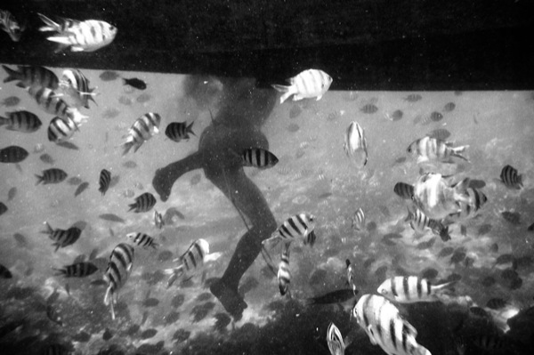

Thailand, Last Year
Last year I was in Thailand and Vietnam for two months. The sun shone hot, sweat streaked my face even in the dark, I went swimming, we were travelling, it was an adventure. Sifting through the memories I find that I’m jealous of my tanner and dusty self sitting at street stalls eating soup or biking through an unbearably hot Sukhothai, drinking in Chiang Mai, swimming over corals and riding the train up Vietnam.
There was a time when I thought my whole life would be made of these series of adventures rather than the adventureless averageness of days. I don’t know where I got the money from in that hypothetical dream, or where I got the energy. With that said, I’m aware that my life has been more adventureful than the average, as is anyone’s who disagrees with the status quo. It’s always possible to push the limits whether one wakes up in the same bedroom or not. I find that my motionless states give way to the highest creative productivity.
But anyway, for the last few days the tramontana has been blowing me frozen, whistling under the unsealed windowpanes. If I try, I might be able to imagine that it is the wind blowing by as I’m sitting behind Simon driving a motorino through the island of Phuket. I am surrounded by the sounds of a market, unfamiliar smells, the stimulus of another country, of Asia.

Beneath MV Cait by Simon Griffee
In my memory, it’s difficult to separate my trip from Simon’s bad luck. On day three his wallet was stolen, on week three a grain of sand busted his camera’s shutter and near the end, he dove into the water wearing his glasses. And among these were sprinkled more unfortuitous occurrences. I think it’s safe to say that we had two very different trips: he was happy to return to Italy while I wanted to stay longer. It was as if something was trying to say: you should have stayed home. One begins with the upmost enthusiasm only to have it ravaged.
One night, smoking and drinking and playing cards, me and our friends pressed him: why all this bad luck, was there anything you did, or took? And then he remembered taking a gold leaf from a shrine inside the Golden Temple the day after our arrival. Many people believe in Luck, that one can perform a certain series of actions to propagate it. Apparently, taking a gold leaf without the proper rituals is very inauspicious. That night, Simon let it drop from the window.
Perhaps his story is about how it’s difficult to assimilate into a place while travelling through it. Or maybe it reveals something about the nature of adventures. Or maybe it simply means: Visitor! Do not take gold leaves from the Golden Temple!
· · · · · · · · · · · · · · · · · · · ·